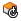

Rotate faces directly
-
Choose Home tab→Modify group→Move Faces list→Rotate Faces

. -
Select the faces you want to rotate, then click the Accept button.
-
Define the axis of rotation.
-
Type the rotation angle you want.
-
Finish the feature.
Tip:
-
You can use the Select option on the command bar to specify whether you want to rotate individual faces you select, a set of faces that belong to an existing feature, or an entire body.
-
You can define the axis using surface geometry, such as a cylindrical or conical face, or by selecting two keypoints that define the axis you want.
-
You can use to Synchronous Rotate option to rotate part geometry using the steering wheel.